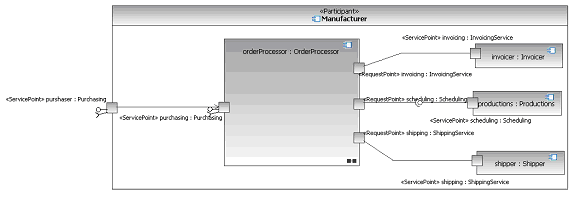

| Example: ServiceChannel (SoaML) |
 |
|
| Related Elements |
|---|
In services models, ServiceChannels connect consumers and providers and therefore define the coupling in the system. They isolate the dependencies between consuming and providing participants to particular Request/service interaction points. This figure illustrates a Manufacturer service Participant that assembles a number of other Participants necessary to actually implement a service as a deployable runtime solution. Manufacturer provides a purchaser service that it delegates to the purchasing service of its orderProcessor part. ServiceChannels connect the Requests to the Services the OrderProcessor needs in order to execute.  |
Several of the above definitions were copied from the Service oriented architecture Modeling Language (SoaML) Specification for the UML Profile and Metamodel Services. View the full copyright notice.
Licensed Materials - Property of IBM |